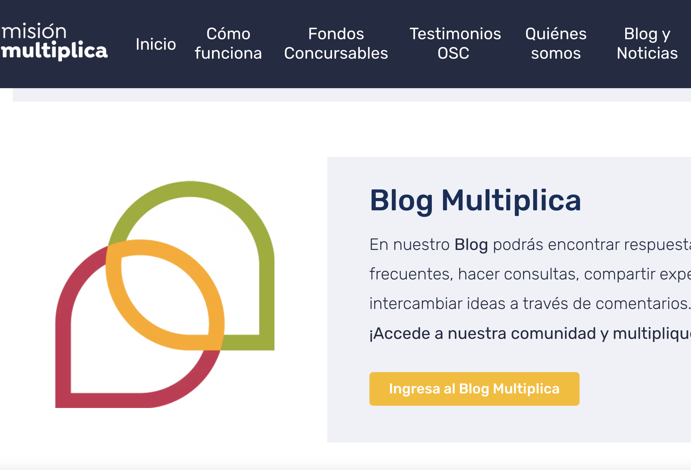
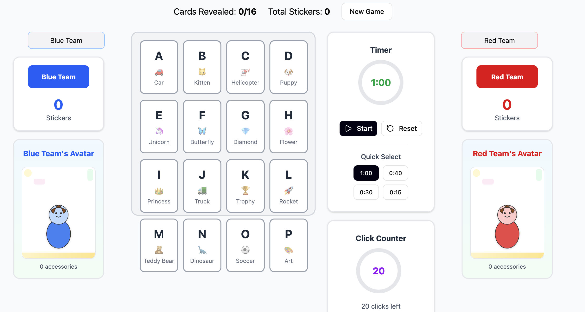
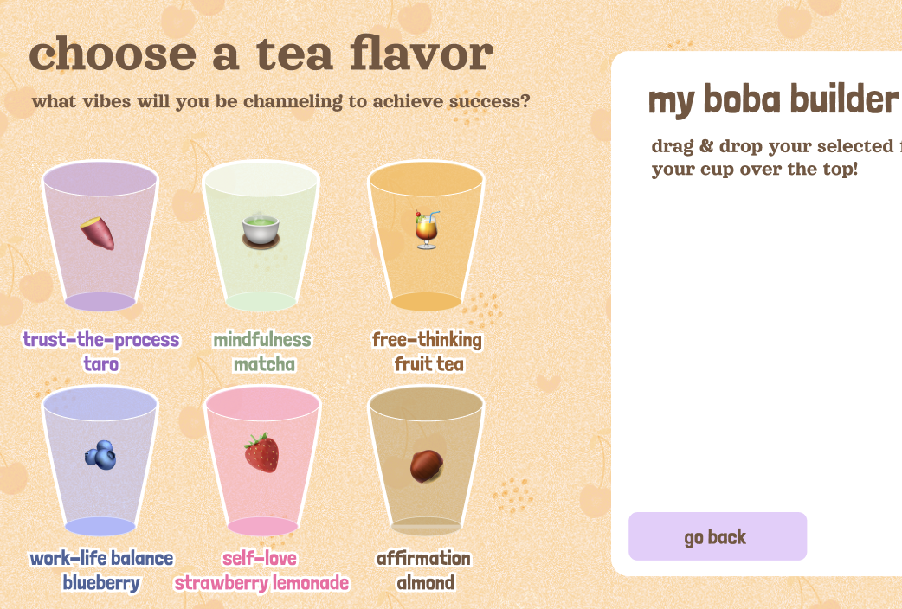
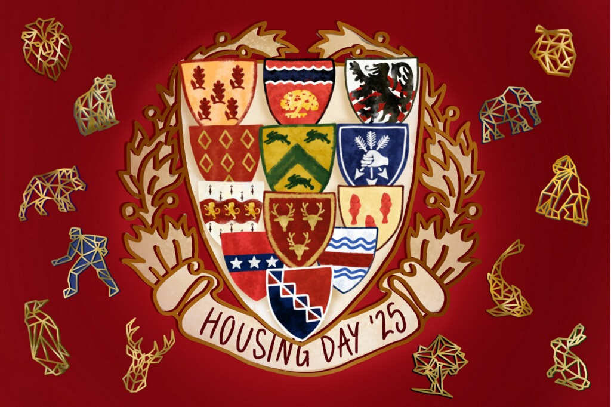
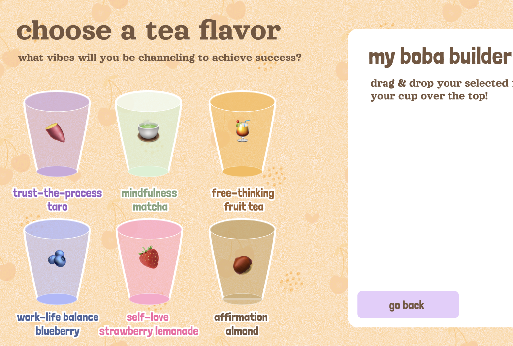
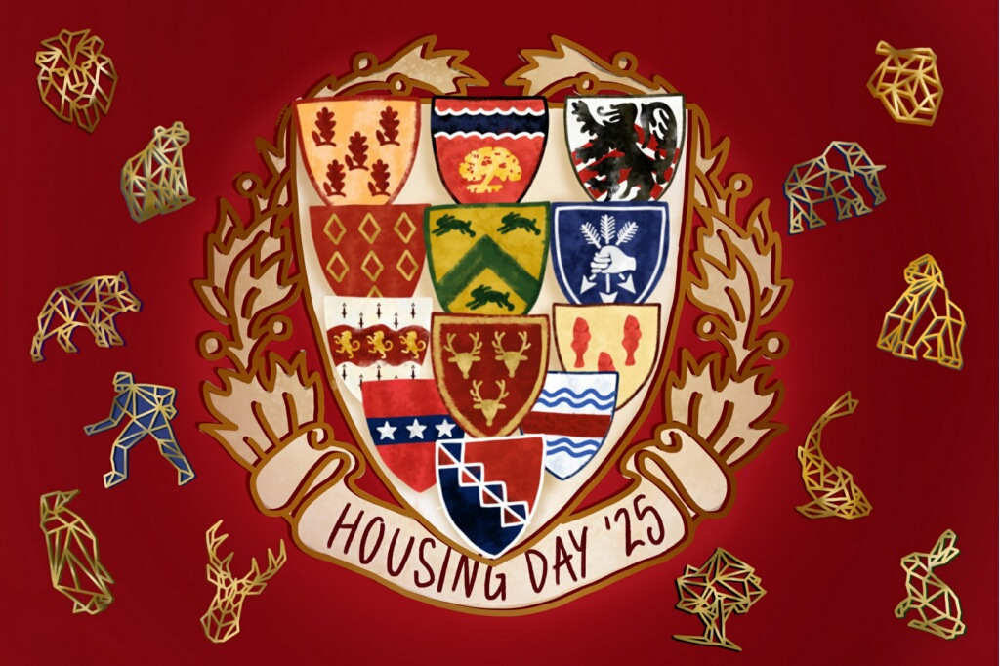

CURRENT PROJECTS


 




Harvard Computer Society Tech 4 Social Good: Misión Multiplica
Prototyping a redesign of a rating feature for the Misíon Multiplica website, which supports civil and social projects in Chile. (Skills: User research, Figma, prototyping)
Kempner Institute: Collaboration Study Stimuli
Prototyped a Figma site serving as study stimuli for research on childhood decision-making. (Skills: Figma, React)
Google Grow UX Certificate Project: Sift
Currently designing an app for finding bakeries and cafes nearby. (Skills: Figma, React, HTML/CSS)
Build A Boba: A Personal Encouragement Site
Prototyped a Figma site for creating meaningful boba characters (downloadable in card form) for sharing with family and friends. (Skills: Figma, graphic design)
The Harvard Crimson: Housing Market
Illustrated 30+ graphics for Harvard's annual Housing Market. (Skills: Graphic design, digital illustration, journalism)
Brand Design Projects: IgnitEd and Grabbit
Website updates and brand development for two start-ups (IgnitEd for peer tutoring, Grabbit for food delivery) in collaboration with friends. (Skills: Graphic design, digital illustration, prototyping)
↓
↓
↓
Let's get in touch!